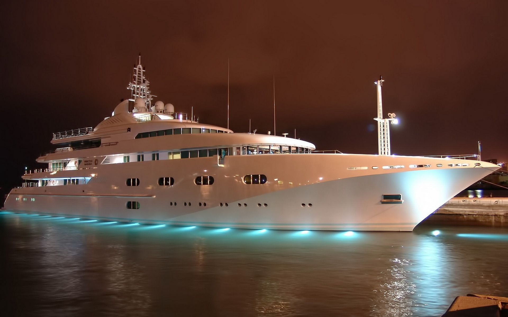

Onde ficamos:
O MSC Seashore é um dos navios da frota da MSC Crociere. Com capacidade para mais de 5.000 passageiros,
é parte da classe "Seaside" e também um dos maiores da companhia. Após navegar na Europa e Caribe, agora também com embarque no Brasil.